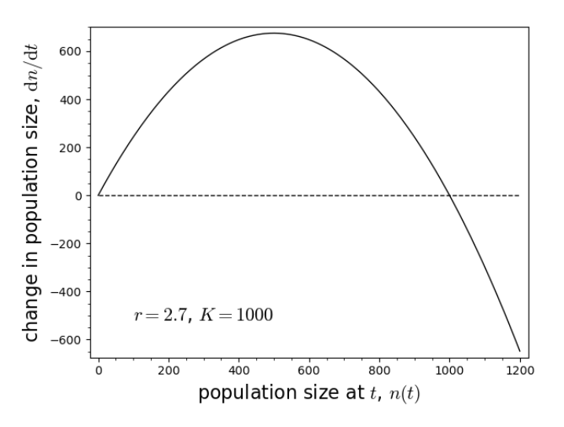

Lecture 5: Numerical and graphical techniques I (univariate)
Lecture overview
- Numerical and graphical techniques
- Plots of variables over time
- Plots of variables as a function of the variables themselves
- Summary
1. Numerical and graphical techniques
Before we jump into more rigorous mathematical analyses, we’re first going to learn how to get a feel for the dynamics of our models.
To do so we’re going to choose some particular numerical values for our parameters and then use our models to predict what happens over time.
The downside of this approach is that we often won’t know the parameter values to choose and, regardless, choosing particular values doesn’t tell us about the dynamics of our model more generally.
The upside is that this approach can highlight errors or reveal unexpected patterns that guide future mathematical analyses.
2. Plots of variables over time
Exponential growth model
In the exponential growth model, there is one parameter, R, the average number of offspring per parent.
In last week’s lab we wrote a recursive function to generate values of n(t), the population size, at sequential time points
import numpy as np
def n(t0, n0, R, max=np.inf):
# Set the initial value of t and n(t)
t, nt = t0, n0
# Yield new values of n(t) if t hasn't gone past the max value
while t <= max:
yield t, nt
# Then update t (this is equivalent to t = t + 1) and n(t)
t, nt = t + 1, nt * R
We then chose some parameter values (reproductive factor R = 2) and initial conditions (initial population size n0 = 1) to get the values of \([t, n(t)]\) from t = 0 to t = 10
nt = n(t0=0, n0=1, R=2, max=10) #choose some parameter values t_nt = np.array([[t,n] for t,n in nt]) #get all the t, n(t) values t_nt
And we then plotted n(t) as a function of t
import matplotlib.pyplot as plt
fig, ax = plt.subplots()
ax.scatter(t_nt[:,0], t_nt[:,1])
ax.set_xlabel('generation, $t$')
ax.set_ylabel('population size, $n(t)$')
plt.show()
This allowed us to compare what happens for different values of R
colors = ['black','blue','red']
fig, ax = plt.subplots()
for i, R in enumerate([1.1,1,0.9]):
nt = n(t0=0, n0=100, R=R, max=10)
t_nt = np.array([[t,n] for t,n in nt])
ax.scatter(t_nt[:,0], t_nt[:,1], color=colors[i], label=f"R = {R}")
ax.set_xlabel('generation, $t$')
ax.set_ylabel('population size, $n(t)$')
ax.legend(frameon=False)
plt.show()
And while we cannot iterate a differential equation in the same way, in this simple case we can solve the differential equation to compare the discrete and continuous models
import sympy
# Initialize symbols and functions
# (we add _ to each variable to differentiate between discrete time eq. above)
r_, t_, n0_ = sympy.symbols('r_, t_, n0_') #define the variables
n_ = sympy.Function('n_') #define a general function
# Initialize the differential equation
diffeq = sympy.Eq(n_(t_).diff(t_), r_ * n_(t_))
# Solve the differential equation
fn = sympy.dsolve(
diffeq, # The differential equation
n_(t_), # The function we want to solve for
ics={n_(0): n0_} #t: 0}
)
# Convert the solved differential equation into a pythonic function
p = sympy.lambdify((n0_, t_, r_), fn.rhs)
# Plot the differential equation over the discrete time scatter plot
colors = ['black','blue','red']
fig, ax = plt.subplots()
for i, R in enumerate([1.1,1,0.9]):
nt = n(t0=0, n0=100, R=R, max=10)
# Discrete time
t_nt = np.array([[t,n] for t,n in nt])
ax.scatter(t_nt[:,0], t_nt[:,1], color=colors[i], label=f"R = {R}")
# Continuous time
# (remember that growth rate r is equal to the reproductive factor R - 1)
t_diff = np.array([[t, p(100, t, R-1)] for t in np.linspace(0, 10, 10)])
ax.plot(t_diff[:,0], t_diff[:,1], color=colors[i])
ax.set_xlabel('generation, $t$')
ax.set_ylabel('population size, $n(t)$')
ax.legend(frameon=False)
plt.show()
Logistic growth model
In the logistic growth model, there are two parameters, the carrying capacity K and the growth rate r. The behaviour doesn’t change much with different values of K, but it is extremely sensitive to the value of r, as we saw in last week’s lab.
def n(n0, r, k, max=np.inf):
t, nt = 0, n0
while t <= max:
yield t, nt
t, nt = t + 1, nt + r * nt * (1 - nt / k)
# Initialize plots
fig, ax = plt.subplots(1, 2, sharex=True, sharey=True)
fig.set_size_inches(12,4)
# Logistic growth with "normal" dynamics
for r in [0.40, 0.70, 1.80, 2.10]:
ax[0].plot(
np.arange(0, 26),
[nt[1] for nt in n(1, r, 1000, max=25)],
label = f"r = {r}"
)
# Logistic growth with "chaotic" or "degenerate" dynamics
for r in [2.70, 3.0995]:
ax[1].plot(
np.arange(0, 26),
[nt[1] for nt in n(1, r, 1000, max=25)],
label = f"r = {r}"
)
# Add titles and annotations
ax[0].set_title('"Normal" dynamics')
ax[1].set_title('"Chaotic" dynamics')
for i in range(2):
ax[i].set_xlabel('generation, $t$')
ax[i].set_ylabel('population size, $n(t)$')
ax[i].legend(frameon=False)
fig.tight_layout()
plt.show()
We can also check out how the dynamics oscillate by creating a bifurcation diagram of the growth after carrying capacity has been reached.
# Sample the periodicity of the oscillations
# by taking unique values after reaching carrying capacity
def log_map(r, n0=900, k=1000):
return np.unique([nt[1] for t, nt in enumerate(n(n0, r, k, max=75)) if t > 30])
# Compute the logistic map for different growth rates in discrete time
r, Nr = np.array([]), np.array([])
for i in np.linspace(1.5, 3, 1000):
nl = log_map(i)
r = np.hstack((r, [i for _ in range(len(nl))]))
Nr = np.hstack((Nr, nl))
# Plot the logistic map on a black background
fig, ax = plt.subplots()
ax.patch.set_facecolor('black')
ax.scatter(r, Nr, s=0.075, color='white')
These are some very complex and potentially strange dynamics!
Does the continuous-time model behave the same?
Let’s numerically solve the differential equation for some particular parameter values
# Initialize symbols and functions
# (we add _ to each variable to differentiate between discrete time eq. above)
r, t, n0, K = sympy.symbols('r, t, n0, K') #define the variables
n_ = sympy.Function('n_') #define a general function
# Initialize the differential equation
diffeq = sympy.Eq(n_(t).diff(t), r * n_(t) * (1 - n_(t) / K))
# Solve the differential equation
fn = sympy.dsolve(
diffeq, # The differential equation
n_(t), # The function we want to solve for
ics={n_(0): n0} #t: 0}
)
# Convert the solved differential equation into a pythonic function
p = sympy.lambdify((n0, t, r, K), fn.rhs)
# Logistic growth in discrete time vs continuous time
fig, ax = plt.subplots()
ax.plot(
np.arange(0, 26),
[nt[1] for nt in n(1, 2.70, 1000, max=25)],
label = f"r = 2.70 (discrete time)"
)
ax.plot(
np.linspace(0, 26, 100),
[p(1, t, 2.7, 1000) for t in np.linspace(0, 26, 100)],
label = f"r = 2.70 (continuous time)"
)
# Add titles and annotations
ax.set_xlabel('generation, $t$')
ax.set_ylabel('population size, $n(t)$')
ax.legend(frameon=False)
fig.tight_layout()
plt.show()
3. Plots of variables as a function of the variables themselves
OK, so now we’ll move on to a plot that is easier to generate and is very useful for models with just one variable (which is what we’ve been working with).
Instead of plotting the variable as a function of time, we’ll plot the variable as a function of the variable, eg, n(t + 1) as a function of n(t).
Haploid selection
Let's start with our model of haploid selection
# Build cobweb plotting function
def cobweb_haploid(p0, WA, Wa, max=np.inf):
t, pnow, pnext = 0, p0, 0 #initial conditions
while t <= max:
yield pnow, pnext #current value of p(t) and p(t+1)
pnext = (WA * pnow) / (WA * pnow + Wa * (1 - pnow))
yield pnow, pnext #current value of p(t) and p(t+1)
pnow = pnext #update p(t)
t += 1 #update t
# Build function for generating figure
def plot_haploid_selection(WA, Wa, p0=0.5, ax=None):
pt = sympy.symbols('pt') #define our variable p(t)
# Write out sympy equation
f = (WA * pt) / (WA * pt + Wa * (1 - pt)) #the recursion equation
# Compute function over a set of points in [0,1] by 'lambdifying' sympy equation
t = np.linspace(0,1,100)
fy = sympy.lambdify(pt, f)(t)
# Build plot
if ax == None:
fig, ax = plt.subplots()
ax.plot(t, fy, color='black', label=f"$W_A$ = {WA}, $W_a$ = {Wa}")
ax.plot(t, t, color='black', linestyle='--')
# Add cobweb
cobweb = np.array([p for p in cobweb_haploid(p0, WA, Wa, max=100)])
ax.plot(cobweb[:,0], cobweb[:,1])
# Annotate and label plot
ax.set_xlim(0,1)
ax.set_ylim(0,1)
ax.set_xlabel("allele frequency at $t$, $p(t)$")
ax.set_ylabel("allele frequency at $t+1$, $p(t+1)$")
ax.legend(frameon=False)
return ax
# Plot figure
fig, ax = plt.subplots(1,2)
fig.set_size_inches(12,4)
# First cobweb with WA > Wa
plot_haploid_selection(WA = 1, Wa = 0.5, ax=ax[0])
# Second cobweb with WA < Wa
plot_haploid_selection(WA = 0.5, Wa = 1, ax=ax[1])
Note that the cobweb plots (staircase looking lines in blue) track the movement of the allele frequencies from \(t \rightarrow t + 1\). By following the cobweb, you can determine if and where the system will converge to an equilibrium.
Diploid selection
Now let’s move on to the slightly more complex model of diploid selection
def cobweb_diploid(p0, WAA, WAa, Waa, max=np.inf):
t, pnow, pnext = 0, p0, 0 #initial conditions
while t <= max:
yield pnow, pnext #current value of p(t) and p(t+1)
pnext = (WAA * pnow**2 + WAa * pnow * (1 - pnow)) / (WAA * pnow**2 + WAa * 2 * pnow * (1 - pnow) + Waa * (1 - pnow)**2) #update p(t+1)
yield pnow, pnext #current value of p(t) and p(t+1)
pnow = pnext #update p(t)
t += 1 #update t
# Build function for generating figure
def plot_diploid_selection(WAA, WAa, Waa, ax=None, p0=0.5):
pt = sympy.symbols('pt') #define our variable p(t)
# Write out sympy equation
f = (WAA * pt**2 + WAa * pt * (1- pt) ) / (WAA * pt**2 + WAa * 2 * pt * (1 - pt) + Waa * (1 - pt)**2) #the recursion equation
# Compute function over a set of points in [0,1] by 'lambdifying' sympy equation
x = np.linspace(0,1,100)
fy = sympy.lambdify(pt, f)(x)
# Build plot
if ax == None:
fig, ax = plt.subplots()
# Add cobweb
cobweb = np.array([p for p in cobweb_diploid(p0, WAA, WAa, Waa, max=100)])
ax.plot(cobweb[:,0], cobweb[:,1])
# Annotate and label plot
ax.plot(x, fy, color='black', label=f"$W_A$$_A$ = {WAA}, $W_A$$_a$ = {WAa}, $W_a$$_a$ = {Waa}")
ax.plot(x, x, color='black', linestyle='--')
ax.set_xlim(0,1)
ax.set_ylim(0,1)
ax.set_xlabel("allele frequency at $t$, $p(t)$")
ax.set_ylabel("allele frequency at $t+1$, $p(t+1)$")
ax.legend(frameon=False)
return ax
# Plot figure
fig, ax = plt.subplots(1,2)
fig.set_size_inches(12,4)
# First cobweb with WA > Wa
plot_diploid_selection(WAA=1, WAa=2, Waa=1, p0=0.95, ax=ax[0])
# Second cobweb with WA < Wa
plot_diploid_selection(WAA=1, WAa=2, Waa=1, p0=0.21, ax=ax[1])
Other models
We can do something very similar for difference and differential equations.
Now we plot the change in the variable as a function of the current value of the variable, eg, \(dn/dt\) as a function of \(n(t)\).
For example, in our model of haploid selection we have
# Initialize sympy symbols
p0, s, t = sympy.symbols('p0, s, t')
p = sympy.Function('t')
# Specify differential equation
diffeq = sympy.Eq(p(t).diff(t), s * p(t) * (1 - p(t)))
# Convert differential equation RHS to pythonic function
dp = sympy.lambdify((s, p(t)), diffeq.rhs)
# Plot the curve
fig, ax = plt.subplots()
for s_coeff in [0.01, -0.01]:
ax.plot(
np.linspace(0, 1, 100),
dp(s_coeff, np.linspace(0,1, 100)),
label=f"s = {s_coeff}"
)
ax.set_xlabel('allele frequency at $t, p(t)$')
ax.set_ylabel('change in allele frequency, $dp/dt$')
ax.legend(frameon=False)
We’ll take a look at the even more complex model of logistic growth in this week’s lab

4. Summary
To get a feel for our model it is helpful to graph some numerical examples:
- Plot the variable as a function of time
- Plot the variable as a function of itself (univariate)
Next time we’ll look at a technique for models of multiple variables...